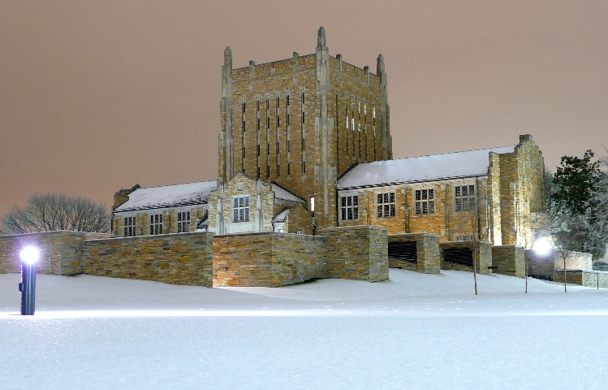
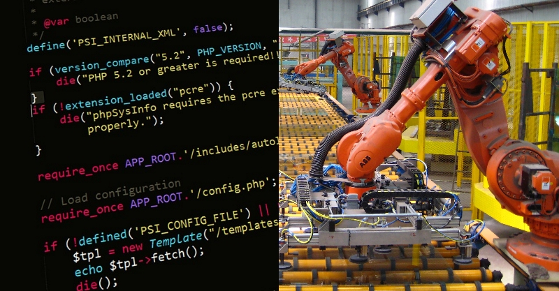

I was born in Kansas City in 1995, and started school in the Blue Valley School District
in Overland Park, Kansas in 2001. I attended Lakewood Elementary School and Lakewood Middle School.
Testing out of 4th grade allowed me to start high school at Blue Valley West in 2009. In high school
I participated in Policy Debate, winning several competitions and personal awards and in 2011,
Blue Valley West won the Kansas State High School Debate Championship behind the team of Chris Birzer and Ideen Saiedian.
Outside of school, I worked at a locally-owned Dairy Queen extensively, learning lessons in responsibility and teamwork.
Throughout high school, I took advanced classes and participated in the school's gifted program which offered additional means of enrichment
and special assistance in applying and competing for admissions and scholarships at top universities. As a result, after high school graduation,
I enrolled in the University of Tulsa College of Engineering and Natural Science as a Presidential Scholar, the most prestigious award offered by TU.

I began my schoolwork at the University of Tulsa in the fall of 2013 as a Mechanial Engineering Major, with the intention of pursuing a minor in Mathematics.
I enjoyed the classes, school, and city of Tulsa, and quickly adapted to college life. By the end of my sophomore year, it was becoming more clear to me that I had an
interest in pursuing graduate studies and additional research, and so I reached out to Dr. Schultz for guidance on getting involved in research. Dr. Schultz offered to mentor me
and after my summer internship in Kansas City at Burns and McDonnell, I began working on the new Quadrupeds project.
After a year of schoolwork and research that involved computer programming, I applied for the Clemson REU on Computer Simulations of Hydrogels, and worked in Clemson
for the Summer of 2016. Now, as I begin my senior year, I am focusing on applications at top engineering graduate schools with an emphasis on robotics or computational engineering.
I'd like to continue using my skills with software to solve problems. No matter where I end up though, as long as I am learning and building, I will be enjoying my time.

I have filled each summer since I began college with an employment opportunity that allowed for personal growth. In 2014, I worked as an administrative assistant at Navitas ESCO.
There I did some data formatting, but I also inspected construction job sites on behalf of Navitas in order to track progress and identify possible issues. This was a great chance
to work in the field and dovetailed nicely into my internship the following summer.
In 2015, I worked at Burns and McDonnell as a Mechanical Engineering Intern in the Aviation and Federal Division.
There, working from their world headquarters in Kansas City, I helped design HVAC and plumbing systems for aviation support infrastructure and federal contracts. I worked in
AutoCAD, Revit, Excel, as well as specialized programs for static pressure calculations. Diagrams I designed and drew were used in drawing packages issued for bid and construction
at Tinker Air Force Base. My summer at Burns and McDonnell was a really enjoyable experience that taught me a lot about engineering practices, but at this point, my interest in research
was taking over my career.
In 2016, I worked under Dr. Kuksenok at Clemson University as a part of the Interfaces and Surfaces REU to study hydrogels using computer simulations. My time in Clemson was extremely
rich with opportunities for improving as a scientist as the program emphasized building skills in recording work accurately and completely, and exhibiting proper research ethics.
By the end of the summer, not only did I feel like a more competent scientist, but I was convinced that graduate school and a career and research would be a great fit for me.